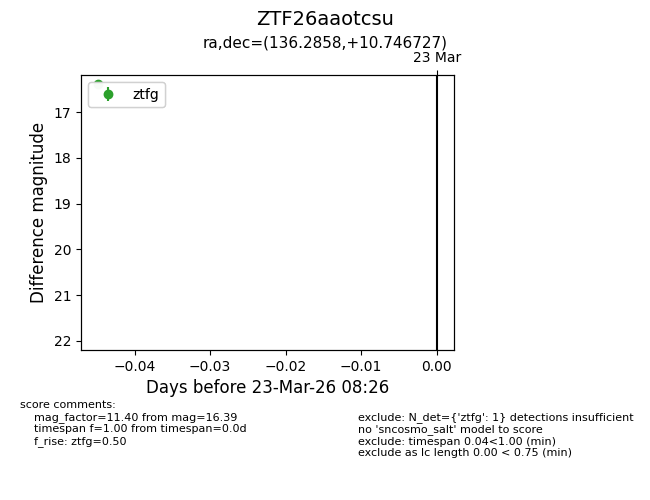
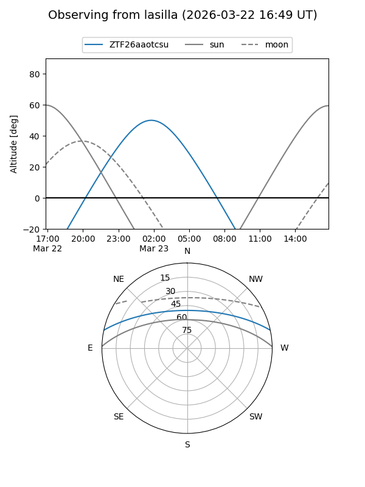
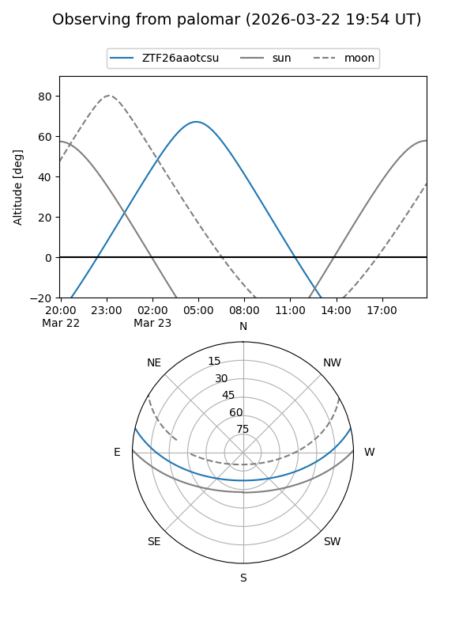

ZTF26aaotcsu
Target ZTF26aaotcsu at 2026-03-23 08:28
Aliases and brokers:
FINK: link
Lasair: link
ALeRCE: link
alt names
ZTF26aaotcsu (ztf,fink_ztf)
Coordinates:
equatorial (ra, dec) = 136.2858,+10.74673
equatorial (HMS+DMS) = 09:05:08.60,+10:44:48.22
galactic (l, b) = (218.5616,+34.51977)
Flags:
Photometry:
last ztfg=16.39
1 ztfg detections
Lightcurve

Visibility


Additional plots